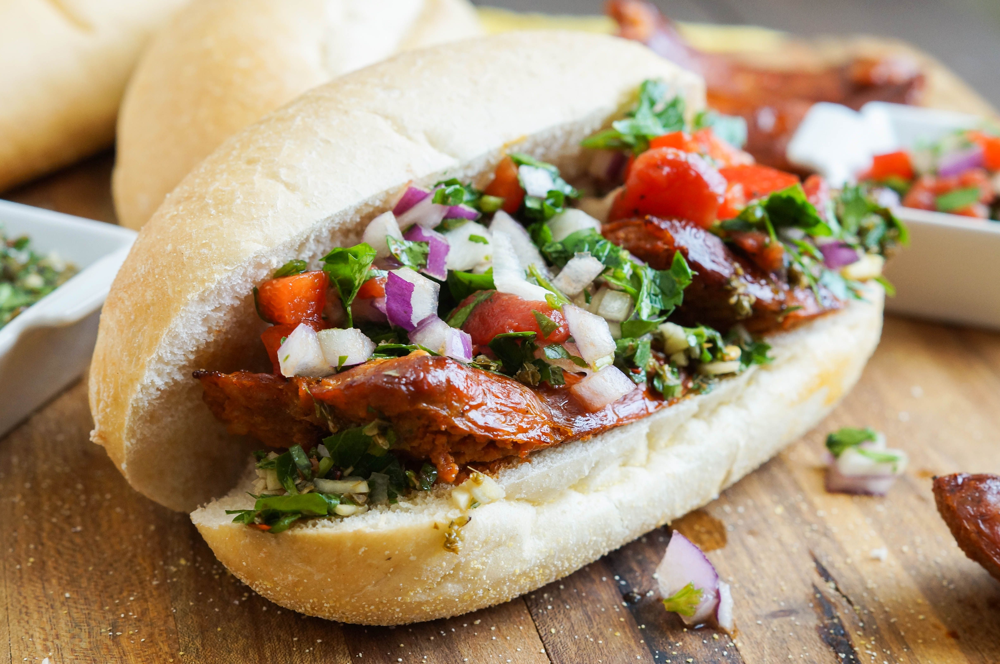

Choripán Argentino
Ingredientes
- 2 panes
- 2 chorizos criollos
- 2 cucharadas de orégano
- 1 diente de ajo
- 1 cucharada de ají molido
- 1 cucharada de perejil fresco
- 1 cucharadita de romero
- 1 cucharadita de albahaca seca
- 100 ml de aceite de oliva
- 25 ml de vinagre de vino
- Sal a gusto
Preparación
- Preparar la salsa chimichurri mezclando el ajo, el perejil, el orégano, el romero, la albahaca, el ají molido, el aceite, el vinagre y la sal.
- Dejar reposar el chimichurri unos minutos para que tome sabor.
- Abrir los chorizos criollos a lo largo para que se cocinen bien por dentro.
- Cocinar los chorizos en la parrilla o plancha hasta que estén dorados.
- Tostar los panes.
- Colocar el chorizo dentro del pan y agregar abundante salsa chimichurri.
